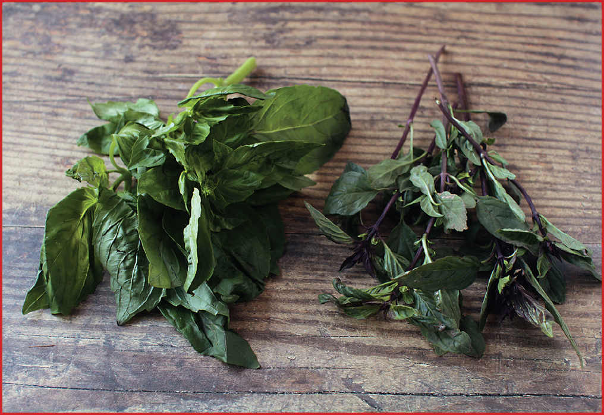

THAI-STYLE BEEF WITH BASIL AND FISH SAUCE
|
Yield Serves 4 |
Active Time 15 minutes Total Time 30 minutes |
You can adjust the heat by adjusting the number of chiles in the dish. One chile will be moderately hot, while five will be scorching. Makrut lime leaves are available fresh or frozen at Thai or Southeast Asian grocery stores. If you can’t find it, any very thinly sliced citrus leaves can be used in its place, or substitute the zest of 1 lime. You can use any type of basil for this recipe (see my basil guide on here). Fried shallots can be found in plastic tubs at most Asian supermarkets, or follow my recipe for Fried Shallots (here).
INGREDIENTS
For the Beef:
1 pound (450 g) beef flank, skirt, hanger, or flap, cut into ¼-inch-thick strips
½ teaspoon (2 g) baking soda
1 teaspoon (5 ml) soy sauce
2 teaspoons (10 ml) fish sauce
1 teaspoon (4 g) granulated sugar
½ teaspoon (1.5 g) kosher salt
For the Sauce and Stir-Fry:
1 to 5 red or green Thai bird chiles, thinly sliced (see Notes)
6 medium garlic cloves (15 to 20 g), thinly sliced
1 medium shallot (1½ ounces/45 g), thinly sliced
1½ tablespoons (20 g) palm sugar
2 teaspoons (10 ml) light soy sauce or shoyu
1 tablespoon (15 ml) fish sauce
4 makrut lime leaves, very thinly sliced into hairs (central veins discarded), plus more for garnish (see Notes)
2 tablespoons (30 ml) peanut, rice bran, or other neutral oil
2 cups packed Thai purple basil (about 2 ounces/55 g) (see Notes)
Thai chile flakes or hot red pepper flakes to taste (optional)
Large handful of store-bought or homemade fried shallots (see Notes)
DIRECTIONS
1For the Beef: Place the beef in a medium bowl, cover with cold water, and vigorously agitate it. Drain through a fine-mesh strainer set in the sink and press on the beef with your hands to remove excess water. Return the beef to the bowl, add the baking soda, and vigorously massage the baking soda into the meat, lifting the meat, throwing it down, and squeezing it for 30 to 60 seconds. Add the soy sauce, fish sauce, sugar, and salt and roughly work the marinade into the meat for at least 30 seconds.
2For the Sauce and Stir-Fry: Place half of the chiles, half of the garlic, half of the shallot, and the palm sugar in a mortar. Grind with a pestle until a mostly smooth paste has formed. Add the soy sauce and fish sauce and mash in the mortar to form a sauce. Set aside. Toss the remaining chiles, garlic, shallot, and the makrut lime leaves in a small bowl to combine.
3BEFORE YOU STIR-FRY, GET YOUR BOWLS READY:
4For the Stir-Fry: Heat a wok over high heat until lightly smoking. Add 1 tablespoon (15 ml) of the oil and swirl to coat. Add half of the beef and cook, without moving it, until well seared, about 1 minute. Continue cooking, while stirring and tossing, until the beef is lightly cooked but still pink in spots, about 1 minute longer. Transfer to a large bowl. Repeat with the remaining tablespoon (15 ml) oil and the remaining beef.
5Return all the beef to the wok, along with sliced garlic/shallot/chile/makrut lime mixture. Continue to cook, tossing and stirring constantly, until the stir-fry is aromatic and the shallots have completely softened, about 1 minute.
6Stir the sauce mixture, add it to the wok, and cook, tossing and stirring constantly, until completely reduced. (The beef should look moist, but there should be no liquid in the bottom of the wok.) Immediately add the basil and toss to combine. Season to taste with more fish sauce and the Thai chile flakes (if using). Transfer to a serving platter. Top with more makrut lime threads and the fried shallots. Serve immediately with steamed rice.
Common Culinary Basils
Basil is one of the most diverse herbs in the world with well over a hundred separate species (all true basils are of the genus Ocimum). The vast majority of the time we’re using different cultivars of the same species,* Ocimum basilicum.
Sweet basil is the most common in the supermarket. It has mid-sized, somewhat shiny leaves that are relatively round and cupped and a sweet, clove-like aroma. Genovese basil has a slightly stronger aroma with flatter, pointier leaves. Neapolitan basil is the strongest flavored of the three common Italian varieties. It has slightly wrinkled-looking leaves and a distinctly spicy aroma.
All three of these basil varieties have delicate leaves that don’t hold up particularly well to cooking. They do best added as a last-second aromatic, whether in Western-style dishes or in stir-fries (the exceptions are in simmered sauces, where basil leaves and stems may be removed before serving, or on top of Neapolitan pizza, where the basil perfumes the oven and the pie while cooking away to almost nothing.)
Purple (or opal) basil has a dramatic dark purple color and smooth or frilly leaves. You can grow it yourself, find it at farmers’ markets, or occasionally at fancy grocery stores. Its flavor is milder and its leaves even more delicate than sweet or Genovese basil, and it’s best used in totally uncooked settings as an ingredient in salads or as a last-second garnish.
While Italian varieties of basil will work alright for most dishes that call for Thai or holy basil—especially Neapolitan basil with its stronger flavor and slightly sturdier structure—if you have access to an Asian market, you’re better off seeking out those other varieties when called for.
Thai purple basil is another cultivar of Ocimum basilicum with smooth green leaves that turn purplish as they meet the dark purple stems. Their flavor has a distinctly spicy anise-like scent, and the leaves have a hardier structure that can hold up better to stir-frying, allowing them to spread their aroma throughout a dish without turning mushy or unpleasant. They’re also excellent for Thai- or Vietnamese-style salads and spring rolls, where their spicier flavor can stand up to punchier accompaniments.
Holy basil is the only basil I call for in this book that is of a different species: Ocimum sanctum (aka Ocimum tenuiflorum). It has soft, almost velvety leaves with saw-toothed edges and a flavor that is more clovey than other basil varieties. I find that it also has a sort of licorice-like sweetness not dissimilar to stevia (both are rich in sugar-based molecules called glycosides). Holy basil has no true substitute, so if you stumble upon some (for me that’s either at the farmer’s market or on rare occasions at the Asian grocery store), pounce on it and plan your meal around it!

*Every dog from a chihuahua to an Italian mastiff is of the same species: Canis familiaris. You can think of cultivars as breeds of dogs. A cultivar is a plant variety that has been created through selective breeding. Often many cultivars can exist within a single species. For instance, there are over seven thousand cultivars of apple, all within the species Malus pumila.